Home › B · Atmosphere & ozone chemistry
The first third of the lecture (slides 5–52) sets the stage: how pressure and temperature vary with height, how a concentration changes in the atmosphere, how long species live and why ozone behaves differently in the stratosphere and the troposphere. The hydrostatic law explains the line-width and O₂ A-band questions; the sinks example repeats Q1; the ozone chemistry explains why NO₂ and O₃ are pollution indicators.
Pressure, temperature and layers
Pressure is the weight of the air above, so it falls exponentially with height. For an isothermal atmosphere the hydrostatic law and the perfect-gas law combine into:
- H ≈ 8.3 km for T = 284 K, R = 8.314 J K⁻¹ mol⁻¹, M = 29×10⁻³ kg mol⁻¹ (Python: 8300 m).
- Pressure halves every H ln 2 = 5.75 km (the slide rounds to ≈ 5 km).
| Altitude | Lecture table (hPa) | Isothermal model (hPa) |
|---|---|---|
| 1 km | 900 | 898 |
| 2 km | 794 | 796 |
| 3 km | 700 | 706 |
| 10 km | 265 | 304 |
At 10 km the model is +15% off because the real atmosphere cools with height (smaller scale height).

| Layer | Upper limit | Temperature gradient | Key facts |
|---|---|---|---|
| Troposphere | 8–18 km | negative | 80% of mass; weather; rapid vertical mixing |
| Stratosphere | 45–55 km | positive | ozone absorbs UV (heating); slow mixing (stratification) |
| Mesosphere | 80–90 km | negative | infrared emission by CO₂ |
| Thermosphere | — | positive | UV below 175 nm absorbed by N₂ and O₂ |
The boundary layer is the lowest part of the atmosphere attached to the surface, a few hundred metres to a few kilometres deep; by day a convective mixed layer, at night a stable nocturnal layer under a residual layer (slide 12).
Composition, units and the concentration budget
Concentration is a number of molecules (or mass) per volume; a mixing ratio is the concentration of a species divided by the total air density: ppm = 10⁻⁶ (µmol/mol), ppb = 10⁻⁹ (nmol/mol), ppt = 10⁻¹² (pmol/mol).
| Constituent | Mixing ratio (slide 14) | Controlling processes |
|---|---|---|
| N₂ | 0.78 | vertical mixing |
| O₂ | 0.21 | vertical mixing |
| H₂O | < 0.01 | evaporation, condensation, transport |
| CO₂ | 345 ppm (slide value) | surface production, mixing |
| O₃ | 6 ppm | photochemical production |
| CH₄ | 1.6 ppm | surface production, chemistry |
| N₂O | 0.35 ppm | surface biotic processes, transport |
| CO | 0.07 ppm | combustion, chemistry |
| CFC-11 | 0.2 ppb | man made |
Why does the concentration Cx of a species change in a volume of air? Emissions (sources), deposition (sinks), chemistry (sources and/or sinks), advection (horizontal transport) and turbulence (vertical transport; the mixing-layer height matters). The slide values are from the lecture and are not updated.
Sinks and lifetime: the worked example
A pollutant is emitted in an urban area of 100 km. It can be removed by oxidation (τ = 1 d), by precipitation scavenging (it rains once a week: τ = 7 d) or by export (wind 20 km/h: τ = 100 km / 20 km/h = 5 h).
- kout = 24 h/5 h = 4.8 d⁻¹, kchem = 1.0 d⁻¹, kdep = 1/7 = 0.14 d⁻¹.
- ktot = 5.94 d⁻¹ ⇒ τ = 1/ktot = 4.0 h.
- Outflow fraction = 4.8/5.94 = 81% (chemistry 17%, rain 2.4%).
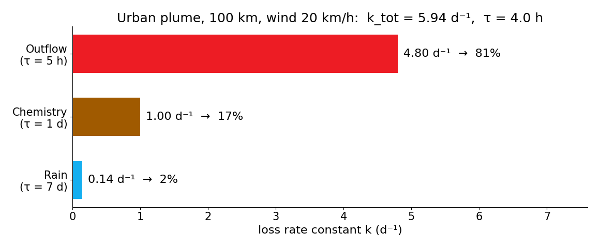
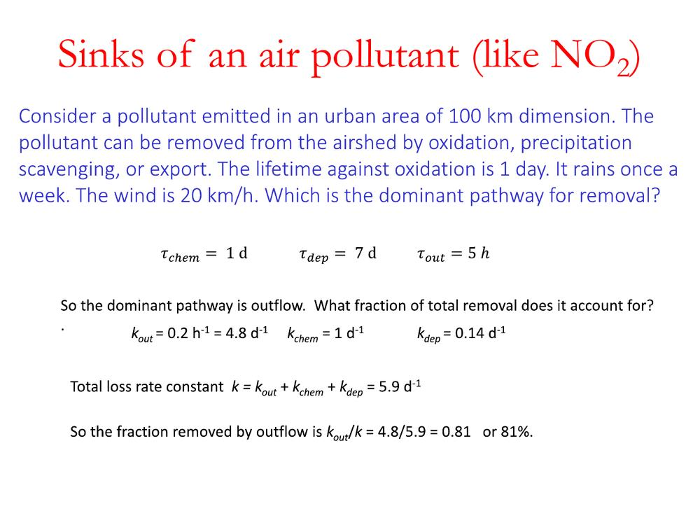
- NO₂: lifetime hours to 1 day; source fossil-fuel combustion; sink oxidation → hotspots.
- SO₂: sources industry and coal power plants; sink oxidation.
- CO: ≈ 2 months; combustion; mixing across latitude bands.
- CH₄: ≈ 10 years; wetlands, livestock, energy production; global mixing.
- HONO: source of OH, the atmosphere’s primary oxidant.
Ozone: stratosphere, troposphere and the ozone hole
Good ozone in the stratosphere shields from UV; bad ozone in the boundary layer is a pollutant that irritates the respiratory system, limits photosynthesis and damages leaves. The reaction O + O₂ + M → O₃ is the same everywhere; what differs is the source of atomic oxygen.
- Stratosphere: photodissociation of O₂ at λ < 240 nm (5.17 eV).
- Troposphere: photodissociation of NO₂ at λ < 424 nm (2.92 eV).

- NO + O₃ → NO₂ + O₂ re-destroys the ozone: zero balance with NOx alone.
- Peroxy radicals from VOC oxidation convert NO to NO₂ without consuming ozone ⇒ net production.
- NO-poor environment: NOx ↑ ⇒ O₃ ↑ (NOx-limited). NO-rich environment: NOx ↑ ⇒ radical loss and titration, O₃ ↓ close to sources (VOC-limited).
Ozone hole: observed at Halley Bay in 1985. In the cold (−80 °C), isolated polar vortex at ≈ 25 km, polar stratospheric clouds form and release ClO and (ClO)₂, which destroy ozone catalytically.

Worked example, quick Q&A and memory hooks
- City 100 km, wind 20 km/h → τout = 100/20 = 5 h → kout = 24/5 = 4.8 d⁻¹.
- Oxidation 1 d → k = 1.0 d⁻¹; rain once a week → k = 0.14 d⁻¹.
- ktot = 5.94 d⁻¹ → τ = 4.0 h.
- Outflow share = 4.8/5.94 = 81%.
Quick Q&A
A: Each layer supports the weight of the air above; density ∝ p, so dp/dz ∝ −p.
A: Ozone absorbs UV there and heats the air; mixing is slow.
A: Their rate constants add: 1/τ = Σ 1/τ_i.
A: Peroxy radicals oxidise NO to NO₂ without consuming O₃.
A: Lifetime hours versus 10 years.
Memory hooks
- Pressure is the weight of the air column above you: climb 5.75 km and half of it is gone.Lên 5,75 km là mất một nửa cột khí phía trên.
- Sinks are open drains in a bath: the widest drain (largest k) empties it, and all drains work at once.Sink như các lỗ thoát nước: lỗ nào rộng nhất thì quyết định.
- The NOx cycle is a revolving door: ozone is made and unmade in a loop; VOC radicals are a side door that lets ozone out without paying the toll.Chu trình NOx như cửa quay; gốc peroxy là cửa phụ.
Lecture slides for this module (Cuesta master course)
23 pages of the lecture “Remote Sensing of the Atmosphere: a focus on air composition” (J. Cuesta, UPEC). Page numbers refer to the lecture PDF. Click a page to enlarge; browse all pages.


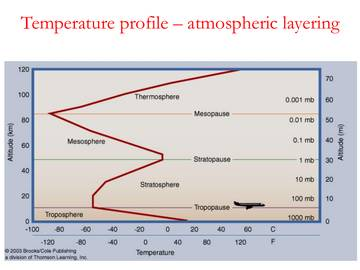
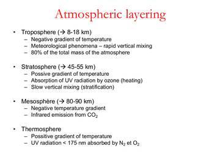
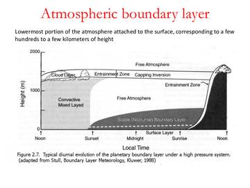

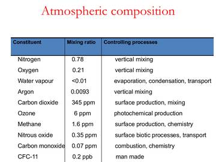


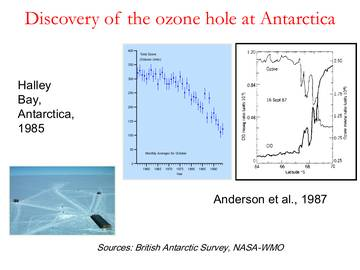

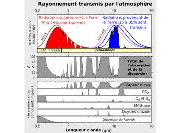


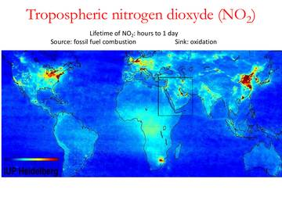

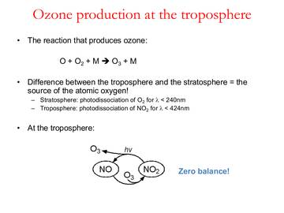

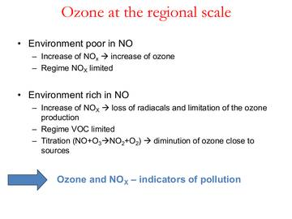
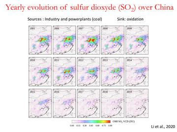

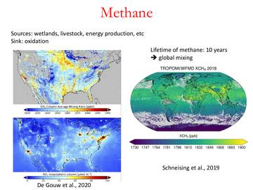
Exam checklist — points you must mention
- Hydrostatic law, H = RT/(Mg) ≈ 8.3 km, p = p₀e^(−z/H), half pressure every ≈ 5.75 km; isothermal model overestimates p at 10 km (304 vs 265 hPa).
- Layers: troposphere (80% of mass, rapid mixing), stratosphere (O₃ heats), mesosphere, thermosphere; boundary layer of a few hundred m to km.
- Mixing ratio units ppm/ppb/ppt; budget terms (emissions, deposition, chemistry, advection, turbulence).
- Sinks add as rates; worked example: outflow ≈ 81%, τ ≈ 4 h.
- NO₂ + hν (λ < 424 nm) → NO + O; O + O₂ + M → O₃; NO + O₃ titration; peroxy radicals → net production; NOx- and VOC-limited regimes.
- Stratosphere: O₂ photolysis λ < 240 nm; ozone hole: polar vortex, PSCs, ClO.
- Áp suất giảm theo hàm mũ: p = p₀e^(−z/H), H = RT/(Mg) ≈ 8,3 km; nửa áp suất sau ≈ 5,75 km.
- Tầng đối lưu chứa ≈ 80% khối lượng khí quyển và xáo trộn nhanh; tầng bình lưu nóng lên do ozone hấp thụ UV.
- Các sink cộng theo tốc độ: k_tot = Σk; ví dụ thành phố 100 km: dòng thoát chiếm ≈ 81%, τ ≈ 4 giờ.
- Tạo ozone tầng đối lưu: NO₂ quang phân (λ < 424 nm) rồi O + O₂ + M → O₃; NO hủy ozone lại (chuẩn độ); gốc peroxy phá cân bằng → ozone thuần dương. Chế độ NOx-limited và VOC-limited.
- Tầng bình lưu: O₂ quang phân λ < 240 nm; lỗ thủng ozone cần xoáy cực lạnh, PSC và ClO.
Practice calculations
These tools run in your browser and are checked against Python:
Hydrostatic pressure and scale height Which sink dominates? Lifetime and parallel sinks
Lecture slides (14 slides; use ← → keys or the buttons)
Quick self-check (10 of 18 questions)
Open the full bank: 18 multiple-choice + 3 essay questions →